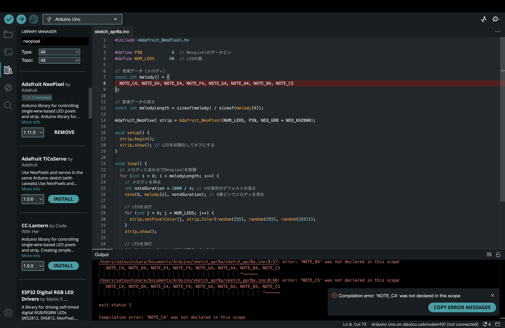

Neopixelを使って何か面白いものができないか考えてみた
まず先にお話ししておくと自分たちのグループは完成には至ることができませんでした。
そのうえでどういったものを製作しようと考えたかそしてどの段階まで到達できたか話そうと思います。
まず私たちはリズムや音楽に合わせてNeopixelを光らせようと考えました。

これはそのaruduinoスケッチになります。
この段階ですでに音に合わせて光らせるという仕組みはできていました。しかし肝心の音声データがどれを使ってもエラーが発生してしまい
ここで挫折してしまいました。
このアイディアの他にも手で音を鳴らしてどれだけ大きいかで光る音を変えてより大きい音をならせて人が勝ちというゲームを考えたりしましたが
音声センサーがないためそれも断念しました。
今回の課題を通して私は限られた時間、限られたものの中でどういったものを作られるかが重要であると思いました。